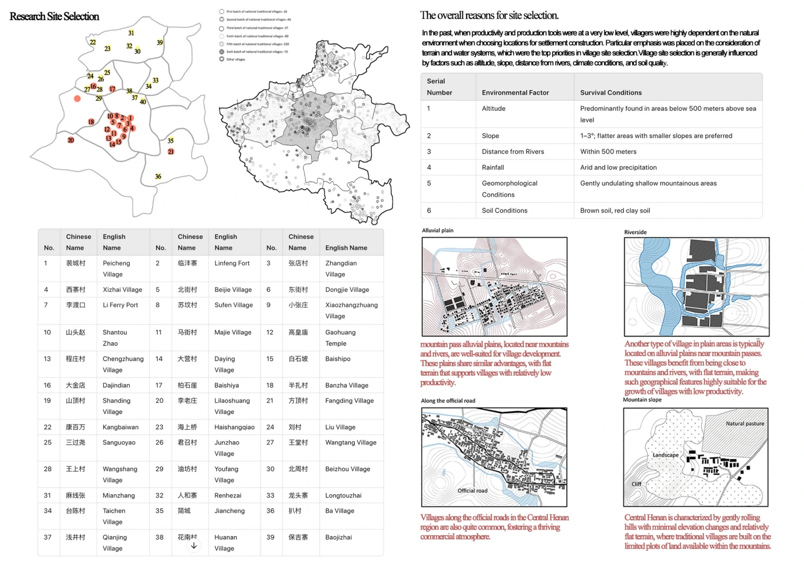
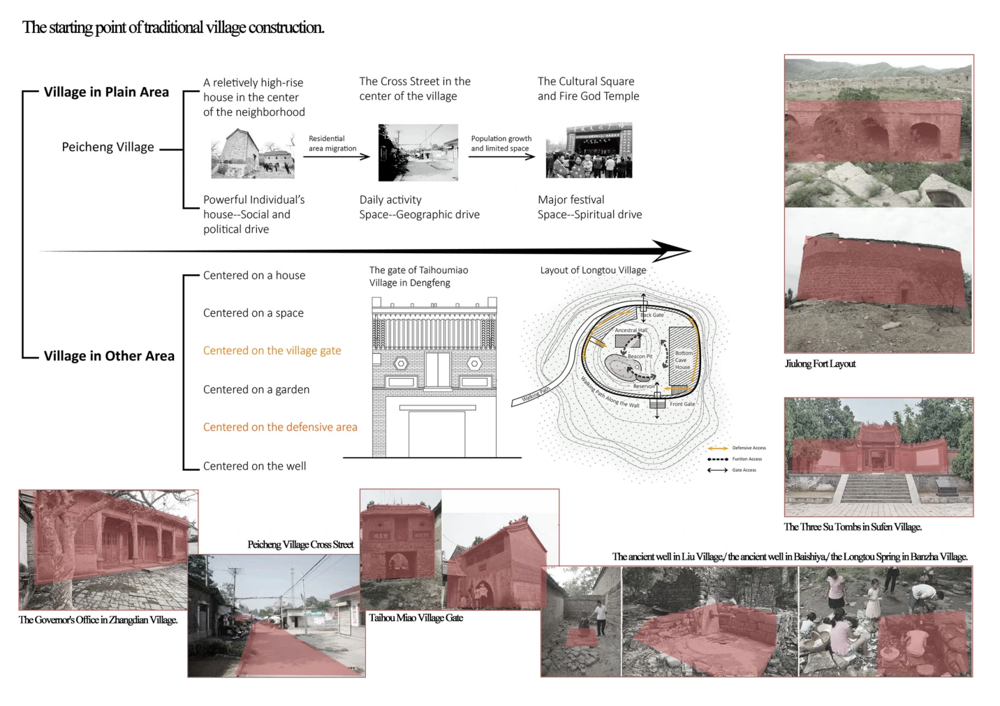
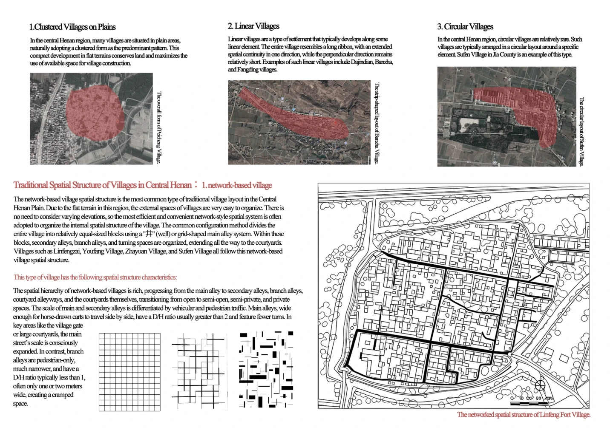
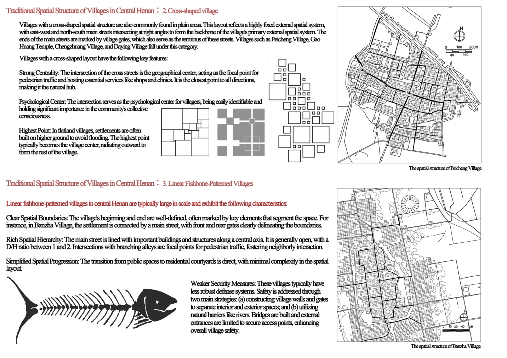
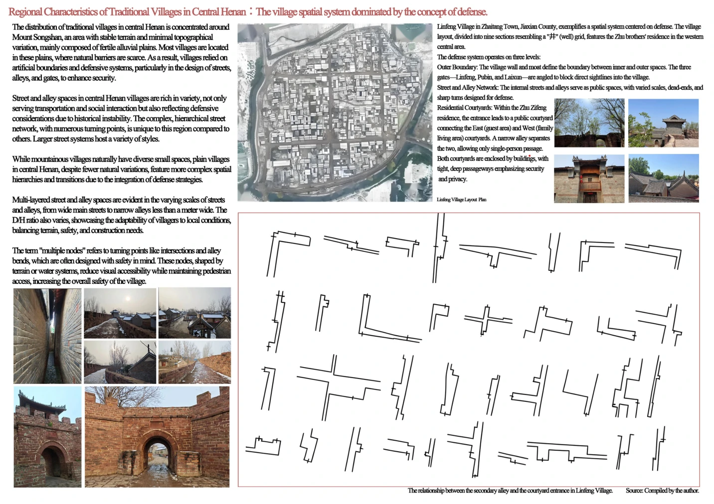
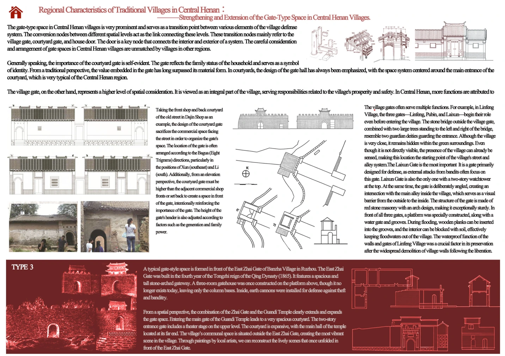

Previous regional research · 2023–24
Traditional Villages of Central Henan
Spatial morphology, cultural context and the evolution of shared places
A comparative study of traditional villages in Central Henan, examining the influence of geography, historical development and local cultural practices on settlement form and shared spaces.
Research scope
The project examines how local landscape, circulation, social practices and historical development shape village patterns. Site surveys and mapping inform comparisons across different settlement types.


Selected maps and typological studies




